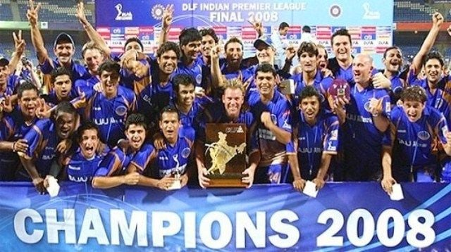

The Indian Premier League (IPL) is a men's T20 franchise cricket league of India. It is annually
contested by ten teams based out of seven Indian cities and three Indian states.[1][2] The league was
founded by the Board of Control for Cricket in India (BCCI) in 2007. Brijesh Patel is the incumbent
chairman of IPL.[3] It is usually held annually in summer across India between March to May and has
an exclusive window in the ICC Future Tours Programme.
The IPL is the most-attended cricket league in the world. In 2014, it was ranked sixth by
average attendance among all sports leagues.[5] In 2010, the IPL became the first sporting event in
the world to be broadcast live on YouTube.[6][7] The brand value of the IPL in 2022 was ₹90,038 crore
(US$11 billion).[8] According to BCCI, the 2015 IPL season contributed ₹1,150 crore (US$140 million)to
the GDP of Indian economy
History
The Indian Cricket League (ICL) was founded in 2007, with funding provided by Zee Entertainment
Enterprises.[10] The ICL was not recognised by the Board of Control for Cricket in India (BCCI) or the
International Cricket Council (ICC) and the BCCI were not pleased with its committee members joining
the ICL executive board.[11] To prevent players from joining the ICL, the BCCI increased the prize
money in their own domestic tournaments and also imposed lifetime bans on players joining the ICL,
which was considered a rebel league by the board 
On 13 September 2007,[14] on the back of India's victory at the 2007 T20 World Cup,[15]
BCCI announced a franchise-based Twenty20 cricket competition called Indian Premier League. The
first season was slated to start in April 2008, in a "high-profile ceremony" in New Delhi. BCCI vice-president
Lalit Modi, who spearheaded the IPL effort, spelled out the details of the tournament including its format, the prize money,
franchise revenue system and squad composition rules. It was also revealed that the IPL would be run by a seven-man governing
council composed of former India players and BCCI officials and that the top two teams of the IPL would qualify for that year's
Champions League Twenty20. Modi also clarified that they had been working on the idea for two years and that the IPL
was not started as a "knee-jerk reaction" to the ICL.[14] The league's format was similar to that of the Premier League of
England and the NBA in the United States
In order to decide the owners for the new league, an auction was held on 24 January 2008 with
the total base prices of the franchises costing around $400 million.[13] At the end of the auction,
the winning bidders were announced, as well as the cities the teams would be based in: Bangalore,
Chennai, Delhi, Hyderabad, Jaipur, Kolkata, Mohali, and Mumbai.[13] In the end, the franchises were
all sold for a total of $723.59 million.[16] The Indian Cricket League soon folded in 2008.[17]
Players of Pakistan are not allowed to take part in the league since the 2008 Mumbai terrorist attacks,
due to the involvement of Pakistan in that attack, 166 people lost their lives and 238 were gravely
injured. The odious attack widespread angered many Indians, resulting in a total ban of Pakistani
players in the IPL
India's victory at the 2007 T20 World Cup